SIMONBAR adalah lapisan monitoring operasional untuk Barang Milik Negara (BMN) di Lapas Narkotika Kelas IIA Kasongan. SIMONBAR bukan pengganti SIMAN (Sistem Informasi Manajemen Aset Negara milik Kementerian Keuangan) maupun SAKTI. Kedua sistem resmi itu tetap menjadi rujukan administrasi untuk identitas barang, nilai perolehan, dan status BMN.
SIMONBAR menjawab pertanyaan operasional yang tidak dijawab sistem resmi: barang ada di ruangan mana persisnya, siapa penanggung jawabnya, bagaimana kondisi terkininya, dan apakah ada laporan kerusakan yang belum ditindaklanjuti.
| Dijawab SIMAN / SAKTI | Dijawab SIMONBAR |
|---|---|
| Barang apa, berapa jumlah dan nilainya | Barang ada di ruangan mana persisnya |
| Status BMN aktif atau tidak | Siapa PIC atau penanggung jawabnya |
| Kondisi umum: Baik atau Rusak | Foto kondisi terkini, kapan terakhir diperiksa |
| Saldo per periode pelaporan | Ada laporan kerusakan terbuka, sudah ditindaklanjuti atau belum |
SIMONBAR adalah satu aplikasi dengan dua pintu masuk. Alamat utama dibuka di komputer kantor oleh pengelola BMN dan pimpinan. Alamat petugas dibuka di HP oleh pegawai yang memeriksa barang di lapangan, dan alamat inilah yang tertanam pada setiap stiker QR. Keduanya memakai satu basis data, satu sistem login, dan satu catatan perubahan.
| Peran | Kewenangan |
|---|---|
| Administrator | Membuat dan menonaktifkan akun, mengatur peran dan unit kerja, mencabut perangkat, menjaga pencadangan data. Tidak memverifikasi laporan. |
| Pengelola BMN | Memverifikasi laporan kerusakan, menetapkan prioritas, melengkapi data operasional, menjalankan pemeriksaan fisik dan rekonsiliasi untuk seluruh unit kerja. |
| Petugas Pemeriksa | Memindai QR, mencatat hasil pemeriksaan, melaporkan kerusakan. Terbatas pada barang di unit kerjanya sendiri, dan tidak dapat memverifikasi laporannya sendiri. |
| Pimpinan | Melihat dashboard, ringkasan kondisi, dan status tindak lanjut. Tidak mengubah data operasional. |
Akun dibuat administrator melalui menu Pengaturan, bukan melalui pendaftaran mandiri. Unit kerja yang ditetapkan pada akun menentukan barang mana yang terlihat oleh pengguna tersebut. Pada demo ini peran contoh yang dipakai adalah Mego Sukoco, Pengelola BMN untuk sisi kantor dan Budi Santoso, Petugas Pemeriksa di Portir untuk sisi lapangan.
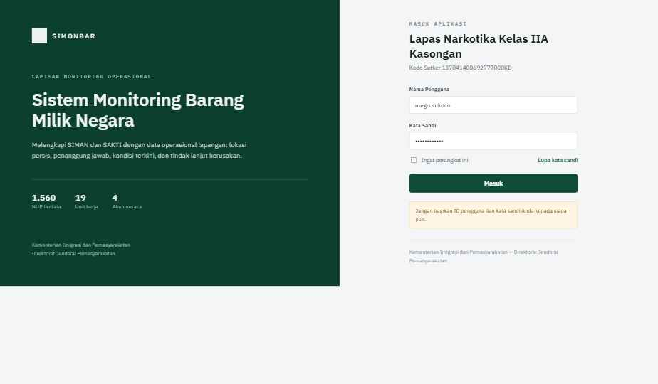
Halaman Masuk. Menampilkan identitas satker dan peringatan keamanan kata sandi.
Dashboard adalah ringkasan satu layar bagi pimpinan untuk melihat posisi BMN secara menyeluruh tanpa membuka setiap modul.
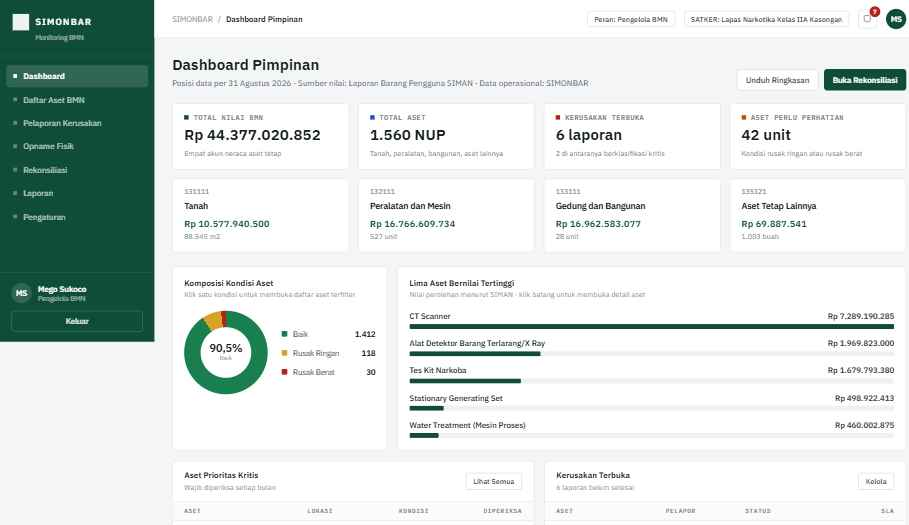
Empat kartu statistik utama dan empat kartu akun neraca. Semua kartu bisa diklik dan membuka Daftar Aset dengan filter yang sesuai.
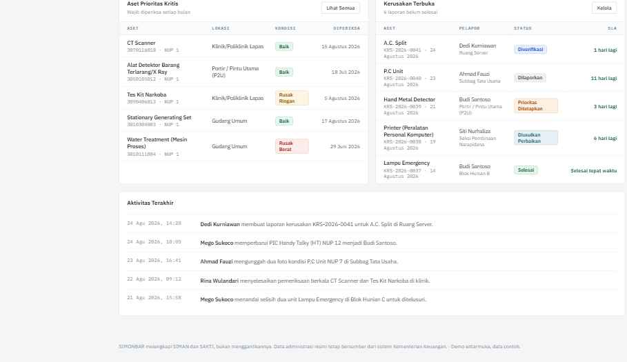
Donut kondisi aset, lima aset bernilai tertinggi, dan dua panel kerja cepat pada bagian tengah Dashboard.
Daftar Aset menampilkan seluruh NUP yang tercatat, dengan identitas mengikuti SIMAN dan kolom operasional (Lokasi, PIC, Kondisi, Prioritas) dikelola SIMONBAR.
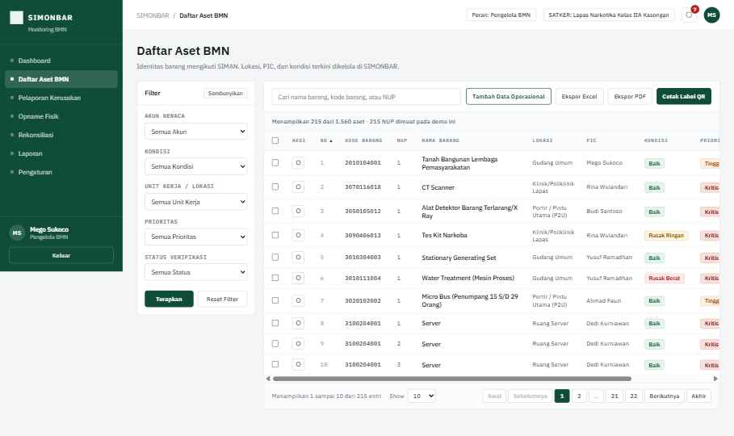
Filter sidebar, pencarian langsung, pengurutan kolom, dan paginasi lengkap.
Halaman ini adalah inti pemisahan tanggung jawab data: kolom kiri abu abu berlabel "Sumber: SIMAN — Read Only" tidak dapat diedit; kolom kanan putih adalah data operasional SIMONBAR dengan tombol Perbarui Data.
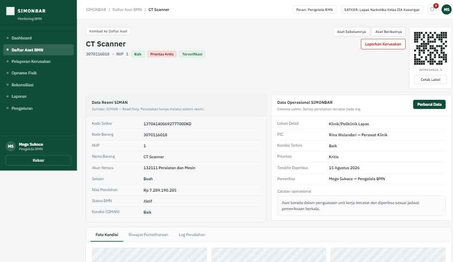
Detail Aset CT Scanner. Data SIMAN di kiri (abu, read only), data operasional SIMONBAR di kanan (dapat diperbarui).
Setiap kali data operasional diperbarui, pengguna wajib mengisi Alasan Perubahan. Sistem otomatis menulis entri baru pada tab Log Perubahan, berisi tanggal, pengubah, field yang berubah, nilai lama menjadi nilai baru, dan alasan.
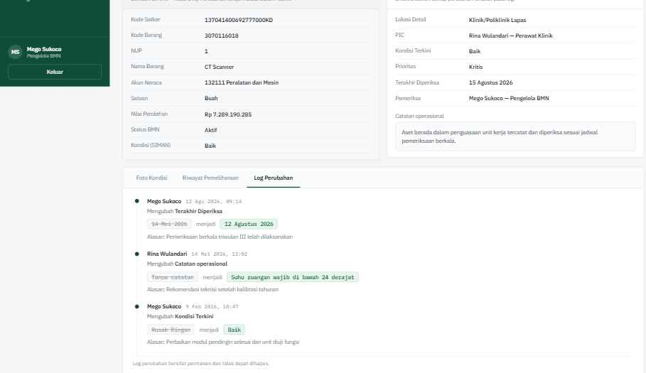
Tab Log Perubahan: riwayat permanen setiap penyesuaian data operasional, tidak dapat dihapus.
Tiga tab tersedia: Foto Kondisi, Riwayat Pemeliharaan, dan Log Perubahan. Navigasi Aset Sebelumnya/Berikutnya di pojok kanan atas memudahkan pemeriksaan berurutan tanpa kembali ke daftar.
Laporan kerusakan adalah dokumen resmi internal, sehingga dibuat lewat halaman formulir tersendiri, bukan modal singkat.
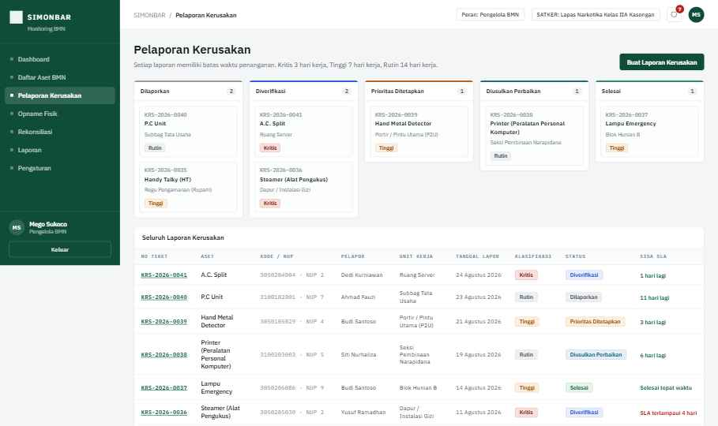
Papan status lima kolom (Dilaporkan sampai Selesai) dan tabel seluruh laporan. Setiap kartu dan nomor tiket bisa diklik menuju detail.
Formulir dibagi empat bagian: Identitas Aset (pencarian dengan saran ketik, kartu ringkas otomatis terisi dari master aset), Rincian Kerusakan (jenis, deskripsi minimal 20 karakter, dampak terhadap layanan), Klasifikasi dan Batas Waktu (kartu Kritis/Tinggi/Rutin yang menghitung otomatis jatuh tempo verifikasi dan penetapan prioritas sesuai standar layanan internal), dan Dokumentasi/Pelapor.
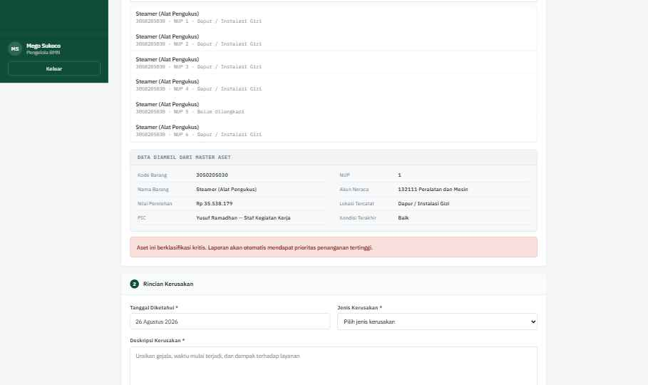
Kartu ringkas otomatis terisi dari master aset, dan pita peringatan saat aset berklasifikasi Kritis.
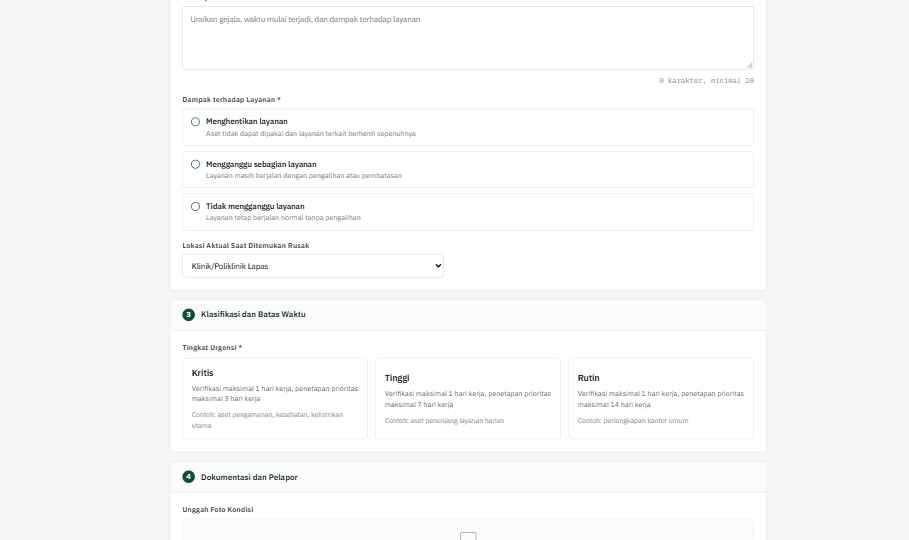
Pilihan Dampak terhadap Layanan berupa kartu klik, bukan dropdown, agar konsekuensi setiap pilihan terlihat jelas.
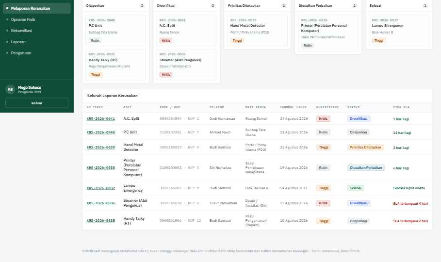
Tiga kartu Tingkat Urgensi dengan batas waktu dan contoh kasus; panel di bawahnya menghitung otomatis jatuh tempo begitu urgensi dipilih.
Setelah Kirim Laporan, sistem meminta konfirmasi, membuat nomor tiket baru (format KRS-2026-00XX), dan mengarahkan ke halaman konfirmasi terkirim.
Klik nomor tiket manapun membuka halaman detail: timeline riwayat penanganan, rincian kerusakan, galeri foto, kartu informasi aset read only, dan komentar internal.
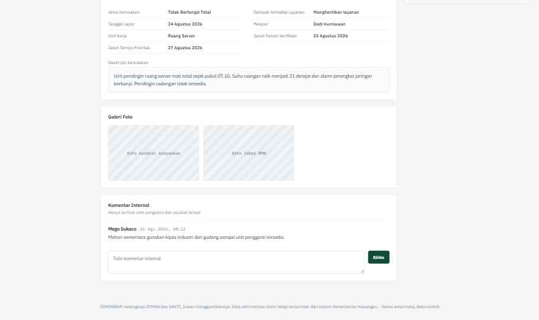
Rincian kerusakan, galeri foto placeholder, dan kolom komentar internal pada Detail Laporan.
Panel Tindakan berubah mengikuti status: Dilaporkan menampilkan Verifikasi/Tolak; Diverifikasi menampilkan Tetapkan Prioritas; Prioritas Ditetapkan menampilkan Usulkan Perbaikan; Diusulkan Perbaikan menampilkan Tandai Selesai; Selesai menampilkan ringkasan penyelesaian. Setiap tindakan memerlukan catatan wajib dan langsung memperbarui timeline, papan kanban, dan Dashboard.
Pemeriksaan fisik mencocokkan keberadaan aset di lapangan dengan data tercatat. Frekuensinya diatur dalam SOP satker, bukan ditetapkan oleh aplikasi.
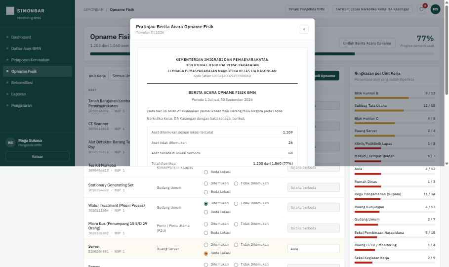
Pratinjau Berita Acara Pemeriksaan Fisik: ringkasan ditemukan, tidak ditemukan, beda lokasi, dan tempat tanda tangan.
Rekonsiliasi membandingkan kuantitas SIMONBAR dengan Laporan Barang Pengguna SIMAN, per triwulan (I sampai IV 2026 tersedia di demo).
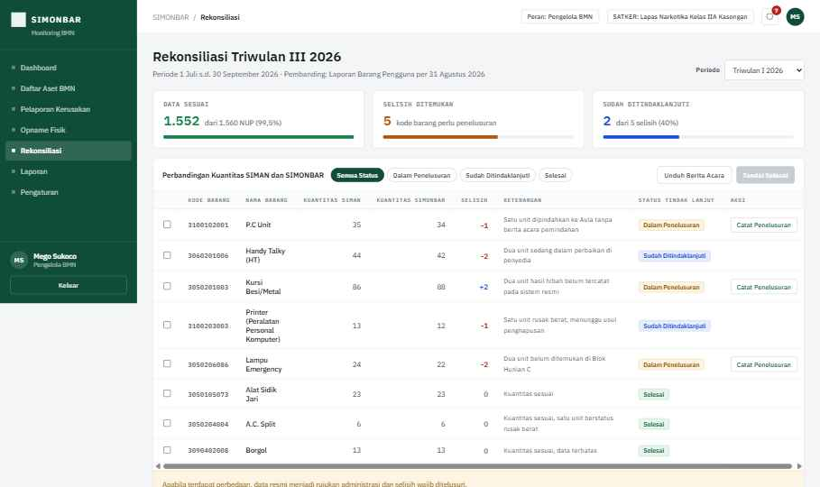
Tabel perbandingan kuantitas SIMAN dan SIMONBAR dengan filter status dan tombol Catat Penelusuran per baris.
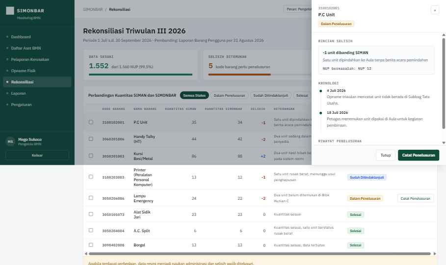
Panel samping saat baris diklik: rincian selisih, NUP bermasalah, kronologi, dan riwayat penelusuran.
Klik baris membuka panel rincian selisih. Baris berstatus Dalam Penelusuran mempunyai tombol Catat Penelusuran (tanggal, petugas, temuan, rencana tindak lanjut). Centang beberapa baris lalu Tandai Selesai untuk menutupnya setelah didukung penelusuran, dengan konfirmasi terlebih dahulu. Prinsip yang selalu berlaku: apabila terdapat perbedaan, data resmi SIMAN menjadi rujukan administrasi dan selisih wajib ditelusuri, tidak pernah ditulis ulang begitu saja.
Berikut simulasi penggunaan SIMONBAR dari temuan kerusakan sampai penutupan, memakai data yang sama dengan demo, untuk menunjukkan bagaimana modul modul di atas saling terhubung dalam satu peristiwa nyata di lapangan.
Mode petugas adalah tampilan SIMONBAR untuk pegawai yang memeriksa barang sambil berjalan di lapangan. Dibuka di HP, bukan di komputer. Petugas masuk sekali dengan akun yang dibuatkan administrator, mencentang Ingat perangkat ini, lalu untuk seterusnya cukup memindai QR tanpa mengetik kata sandi lagi.
Petugas menekan Pindai QR Barang, mengarahkan kamera ke stiker pada barang, dan halaman barang itu langsung terbuka. Bila stiker rusak atau hilang, tersedia pencarian manual dengan mengetik nama atau kode barang.
Halaman pemeriksaan menampilkan data tercatat saat ini (lokasi, penanggung jawab, kondisi terakhir, tanggal periksa terakhir) lalu mengajukan pertanyaan berurutan dengan bahasa sehari hari: barang ada di lokasi ini atau tidak, lalu bagaimana kondisinya. Pertanyaan berikutnya baru muncul setelah yang sebelumnya dijawab, sehingga layar tidak penuh sekaligus.
Bila petugas memilih Ada, tapi di tempat lain, muncul pilihan lokasi aktual yang wajib diisi. Bila memilih Tidak ditemukan, muncul kolom keterangan wajib yang nantinya ditelusuri pengelola BMN pada rekonsiliasi. Bila kondisi dinilai rusak, foto menjadi wajib dan sistem menawarkan sekalian membuat laporan kerusakan dengan foto yang sama.
Setelah disimpan, nama petugas dan waktu pemeriksaan tercatat otomatis pada riwayat barang dan tidak dapat dihapus. Progres di halaman depan langsung bergerak, misalnya dari 4 menjadi 5 dari 12 barang.
Petugas hanya melihat barang pada unit kerjanya sendiri, sesuai unit yang ditetapkan administrator pada akunnya. Petugas mencatat temuan, tetapi tidak memverifikasi laporannya sendiri dan tidak mengubah data resmi SIMAN. Verifikasi tetap dilakukan pengelola BMN di sisi kantor.
Pada menu Akun, petugas dapat melihat perangkat yang terdaftar atas namanya dan mencabut perangkat lama. Administrator juga dapat mencabut seluruh perangkat seorang pengguna dari menu Pengaturan, misalnya ketika HP hilang atau petugas berganti tugas.